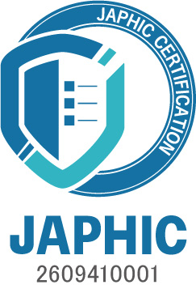

茂貫 尚子（もぬき たかこ）
公認心理師・臨床心理士九州大学大学院 人間環境学府 実践臨床心理学修士課程修了。MBSR講師、日本ヨーガ療法学会認定ヨーガ療法士。
スポーツ選手のマネジメントやヘルスケアプログラムの運営を経て、心理支援の専門家として活動。こころと身体のつながりを大切に、医療・福祉・企業など幅広い領域で支援を行っています。
仕事のストレス、人間関係、気持ちの整理、心身の不調への不安など。心理専門職への相談を希望される方は、下記フォームからお申し込みください。
相談フォームへ進む →お申込み後、事務局が相談枠を確認して日程をご案内します。
勤務先企業名・本社所在地・お名前・連絡先・相談事項などをご入力ください。
お申込み内容・利用枠と専門職の空き状況を確認して、ご本人へご連絡します。
日程確定後、心理専門職によるオンライン相談を実施します。相談時間は原則60分です。
スマートフォン・PCからお申し込みいただけます。申込み先はご本人専用フォームです。
フォームでの送信後、事務局から日程調整のご連絡を差し上げます。
※企業の契約状況により、申込みいただける対象者・相談枠が異なります。
フォーム送信だけでは予約は確定しません。相談枠や空き状況により、翌月以降となる場合があります。
スマートフォンからはこちら
ご相談をお受けする専門職をご紹介します。
九州大学大学院 人間環境学府 実践臨床心理学修士課程修了。MBSR講師、日本ヨーガ療法学会認定ヨーガ療法士。
スポーツ選手のマネジメントやヘルスケアプログラムの運営を経て、心理支援の専門家として活動。こころと身体のつながりを大切に、医療・福祉・企業など幅広い領域で支援を行っています。
